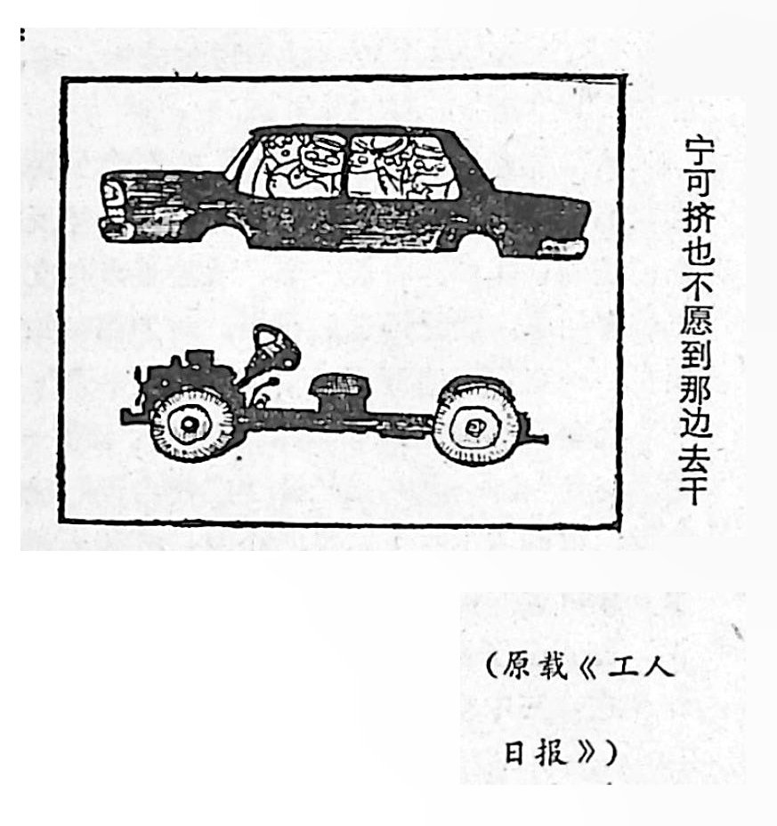

佚名 《人事》1986年第4期（总第7期），第42页（原载《工人日报》）
宁可挤也不愿到那边去干
Rather Squeeze In Than Go and Work Over There
- Description
- Above, a car crammed with passengers; below, a tractor with no one at the wheel.
- Artist
- Unattributed 佚名
- Reprinted from
- 《工人日报》 — Gongren ribao (Workers' Daily)
- Published in
- 《人事》1986年第4期（总第7期）, p. 42
- Themes
- Overstaffing and overlapping agencies · Jobs and assignment

Cite
Unattributed, “宁可挤也不愿到那边去干” [Rather Squeeze In Than Go and Work Over There], Renshi (Personnel) 《人事》, 1986, no. 4, p. 42.